Generalized Linear Models (GLM)
NRES 710
Fall 2022
Download the R code for this lecture!
To follow along with the R-based lessons and demos, right (or command) click on this link and save the script to your working directory
Overview: Generalized Linear Models
Generalized Linear Models (GLM) are not generally covered in ‘intro’ stats classes, but they are so flexible and so common in ecology and environmental science that you really need to know how to work with these models!
The real data sets that we deal with as ecologists and environmental scientists tend to violate some key assumptions of classical linear regression or ANOVA. In particular, residuals are often non-normal and variance is not equal (heteroskedastic) across the range of predictions.
GLMs allow us to model response variables that are not amenable to
classical linear regression – but uses a model structure that closely
resembles linear regression. Pretty much everything about running a GLM
feels like linear regression. The primary function for running GLM
models (glm()) even looks very similar to the regression
function lm().
GLMs are parametric analyses – it’s just that (1) we don’t need to assume our response variable is normally distributed and (2) we don’t need to assume the relationship between the response variable and the predictor variable(s) is linear on the scale of the untransformed response variable. Let’s look into each of these in more detail:
Alternative error distributions
So we don’t need to assume the response variable is normally distributed – but we do need to assume it is distributed according to some known probability distribution – and we need to specify what distribution we ARE assuming. We can assume that the response process is Poisson distributed, or gamma distributed, or any of a host of other distributions (GLMs are typically limited to the set of distributions known as the “exponential family”). But we, the modelers, have to specify which distribution to use!
Link functions
So we don’t need to assume the relationship between the mean of the response variable and the predictor variable(s) is linear on the scale of the untransformed response variable – but we DO assume that the hypothesized relationship is linear on some transformation of the response variable – and we need to specify what transformed version of the response process we wish to assume linearity for. This is called the ‘link function’.
In the general case, a GLM can be described by the following pseudo-equation:
\(f(\mu)=\beta_0+\beta_1\cdot x_1+\beta_2 \cdot x_2 \ldots\)
The left side of this equation is the mean of the response variable, transformed according to the specified link function. The right side of this equation is called the linear predictor and describes how the (transformed) mean response varies as a function of the predictor variable(s).
To complete the picture, we represent the error distribution (inherent variability among observations) according to whatever error process we specified: e.g., a binomial distribution, Poisson distribution, or a number of other possibilities.
Logistic regression
For example, we might have a binary response variable and a continuous predictor variable. Making the assumption of linearity would not necessarily make sense in this case.
Let’s first make up an example:
# logistic regression ----------------------
## made up data for glm #1 (logistic regression)
predictor <- runif(100,0,50)
response <- rbinom(100,1, plogis(-5 + 0.26*predictor) )
plot(response~predictor,ylim=c(-2,2))
abline(lm(response~predictor),col="red") # overlay regression line
layout(matrix(1:4,nrow=2,byrow=2))
plot(lm(response~predictor))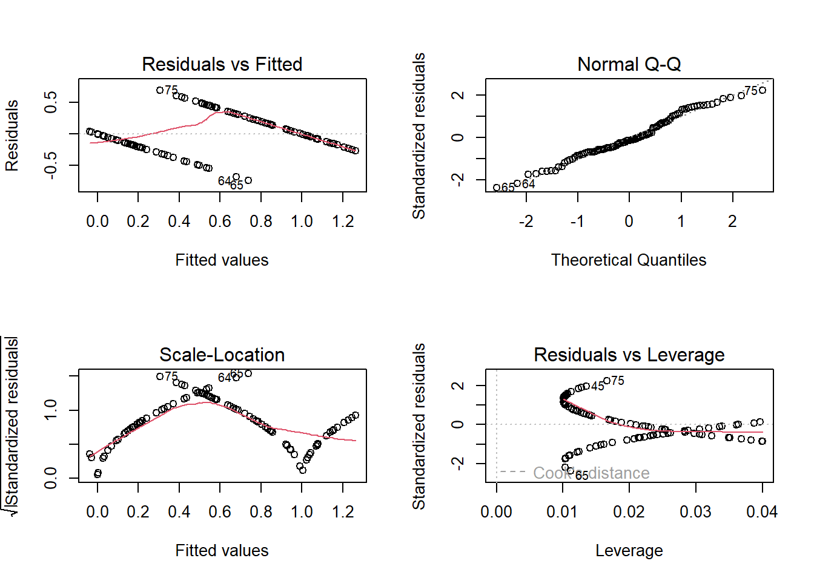
Note that the predicted mean response at high values of the predictor exceed 1- which is impossible for a binary response. In fact, the mean (expected) value for a binary response is the same thing as the “probability of success (frequency of obtaining a value of 1)” – and probabilities are constrained between 0 and 1. Clearly we can’t make the assumption of linearity on the un-transformed binary response. Furthermore, the other diagnostic plots also do not look so hot…
One transformation that makes sense for a regression with a binary response variable is the logit transformation. The logit transformation is commonly used to take probabilities (which are constrained between 0 and 1) and transform them to unconstrained values that can vary between -Inf and Inf.
This way, the linear predictor (which is inherently unconstrained and can therefore theoretically vary between -Inf and Inf) can always be interpretable as a probability!
For example, take the following probabilities:
probs <- runif(10)
probs## [1] 0.41259901 0.69469295 0.05109803 0.46716814 0.94749137 0.61687316
## [7] 0.87175578 0.44395651 0.83994030 0.23815826Here’s what happens if we apply the logit transformation:
\(logit(p) = log(\frac{p}{(1-p)})\)
data.frame(
p = probs,
logit.p=log(probs/(1-probs))
)## p logit.p
## 1 0.41259901 -0.3532315
## 2 0.69469295 0.8221520
## 3 0.05109803 -2.9215597
## 4 0.46716814 -0.1315167
## 5 0.94749137 2.8928403
## 6 0.61687316 0.4762973
## 7 0.87175578 1.9165729
## 8 0.44395651 -0.2251199
## 9 0.83994030 1.6577839
## 10 0.23815826 -1.1628034If our response variable is binary and we want to assume that the mean response (on some transformed scale) is linearly dependent on our predictor variable, the logit transformation is a good candidate for our link function, because this way the mean response will never go below zero or above one.
So instead of:
\(\bar{y} = \beta_0 + \beta_1\cdot x\)
We can use the logit link function and assume instead that:
\(logit(\bar{y}) = \beta_0 + \beta_1\cdot x\)
If we solve for y, this equation becomes:
\(\bar{y} = \frac{e^{\beta_0 + \beta_1\cdot x}}{1+e^{\beta_0 + \beta_1\cdot x}}\)
This is what we do when we conduct a logistic regression! Specifically, in a logistic regression we generally assume the following:
Response distribution: response variable is binomially distributed. Often (but not necessarily), this takes the form of a specific binomial distribution with size=1 (can only be zero or one; also known as a Bernoulli distribution).
Link function: the mean response (binomial probability) is a linear function of the predictor variable(s) on the logit scale.
We use a binomial response distribution because our response variable is analogous to a coin flip. If you flip one coin you can get only a zero or a one, just like the response variable. The binomial distribution matches the response variable, so it is an appropriate distribution to assume!
## conduct logistic regression:
mydat <- data.frame(response=response,predictor=predictor)
model <- glm(response~predictor,family=binomial(link="logit"),data=mydat) # logistic regression in R
summary(model) # summary looks similar to ordinary linear regression!##
## Call:
## glm(formula = response ~ predictor, family = binomial(link = "logit"),
## data = mydat)
##
## Deviance Residuals:
## Min 1Q Median 3Q Max
## -2.41677 -0.24829 0.04037 0.26223 1.97845
##
## Coefficients:
## Estimate Std. Error z value Pr(>|z|)
## (Intercept) -5.81957 1.37337 -4.237 2.26e-05 ***
## predictor 0.29162 0.06465 4.510 6.47e-06 ***
## ---
## Signif. codes: 0 '***' 0.001 '**' 0.01 '*' 0.05 '.' 0.1 ' ' 1
##
## (Dispersion parameter for binomial family taken to be 1)
##
## Null deviance: 133.750 on 99 degrees of freedom
## Residual deviance: 49.214 on 98 degrees of freedom
## AIC: 53.214
##
## Number of Fisher Scoring iterations: 7newdat <- data.frame( # make predictions for plotting regression line and approx conf bounds
predictor = seq(0,50,1)
)
mypred <- predict(model,type="response",se.fit=T,newdata = newdat)
plot(response~predictor)
lines(newdat$predictor,mypred$fit,col="blue")
lines(newdat$predictor,mypred$fit+2*mypred$se.fit,col="blue",lty=2)
lines(newdat$predictor,mypred$fit-2*mypred$se.fit,col="blue",lty=2)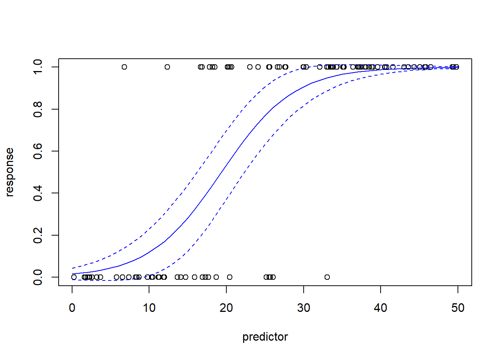
Note that the relationship between the response and predictor looks non-linear. But this is not the same thing as non-linear regression. GLM is a type of linear model for a reason. It’s just that the relationship is assumed to be linear on the logit scale. Here is another visualization of the same exact model:
par(mfcol=c(1,2))
mypred <- predict(model,type="link",se.fit=T,newdata = newdat)
plot(newdat$predictor,mypred$fit,col="blue",type="l",ylab="mean response (logit scale)",xlab="predictor")
lines(newdat$predictor,mypred$fit+2*mypred$se.fit,col="blue",lty=2)
lines(newdat$predictor,mypred$fit-2*mypred$se.fit,col="blue",lty=2)
mypred <- predict(model,type="response",se.fit=T,newdata = newdat)
plot(newdat$predictor,mypred$fit,col="blue",type="l",ylab="mean response",xlab="predictor")
lines(newdat$predictor,mypred$fit+2*mypred$se.fit,col="blue",lty=2)
lines(newdat$predictor,mypred$fit-2*mypred$se.fit,col="blue",lty=2)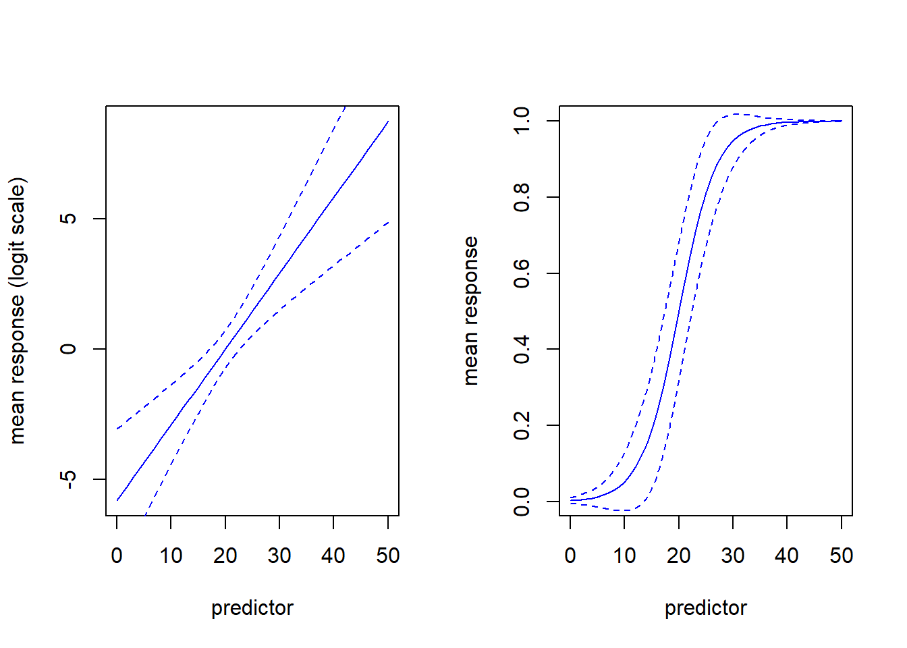
The standard regression diagnostic plots don’t work for logistic regression (we’ll discuss this more in the Poisson regression example below). However, we can use deviance residuals, Pearson residuals or quantile residuals to assess whether the key assumptions of GLM may be violated. I prefer to use quantile residuals, because they (unlike deviance residuals) are useful for nearly any class of model including logistic regression and mixed-effects models (via the DHARMa package; see below):
# quantile residuals (GLM diagnostics)
qr <- statmod::qresiduals(model)
qqnorm(qr)
abline(0,1)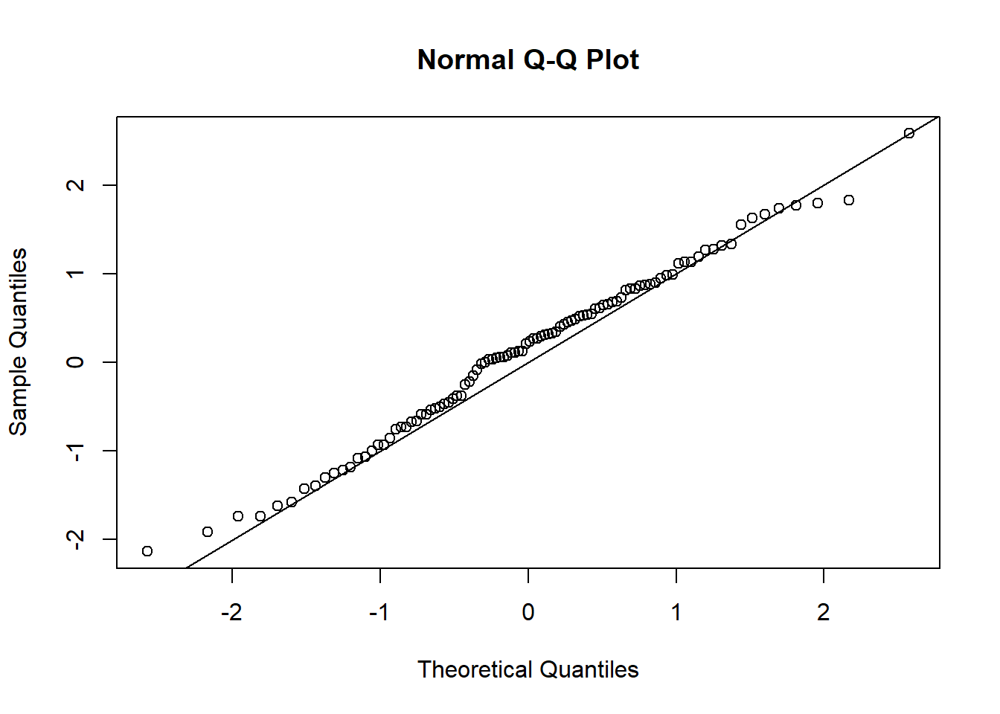
plot(qr~predict(model))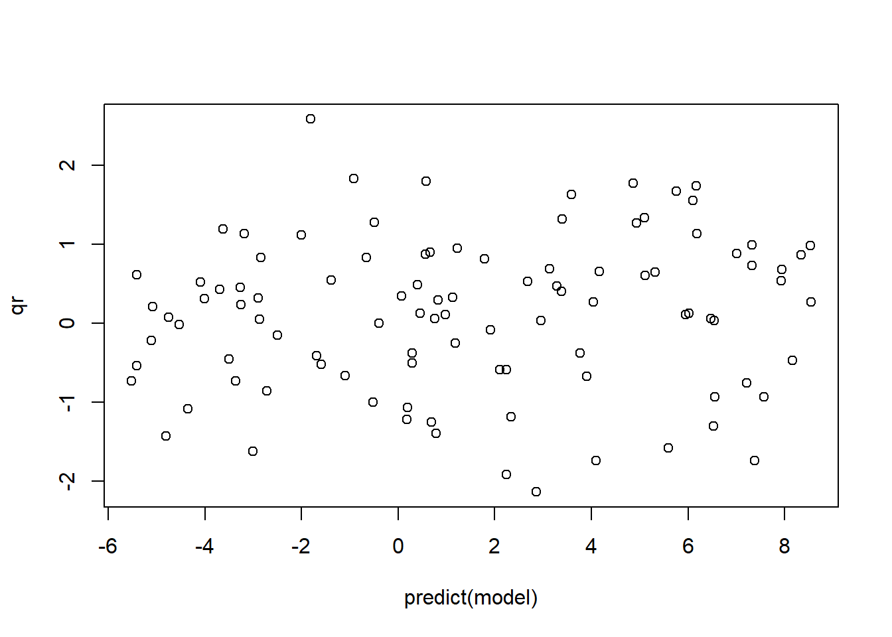
One other kind of fun and useful trick is that we can use the “equatomatic” package to display the mathematical formula for models specified in R, including GLM models:
## display formula!
library(equatiomatic)
equatiomatic::extract_eq(model,wrap=T,intercept = "beta",show_distribution = T)\[ \begin{aligned} \operatorname{response} &\sim Bernoulli\left(\operatorname{prob}_{\operatorname{response} = \operatorname{1}}= \hat{P}\right) \\ \log\left[ \frac { \hat{P} }{ 1 - \hat{P} } \right] &= \beta_{0} + \beta_{1}(\operatorname{predictor}) \end{aligned} \]
To render the equations using LaTeX, you can use something like https://quicklatex.com/.
Another simple example (Poisson count regression)
Sometimes our measured response is a count of something (e.g., number of stems in a plot). In such cases, our response variable cannot go below zero- and the response variable should ideally come from a discrete distribution that only allows integers. The simplest way to model this is:
Response distribution: Poisson
Link function: Natural logarithm
The Poisson distribution (with only one parameter) is the simplest discrete probability distribution, and the (natural) log is the simplest link function that maps a quantity with a lower bound of zero to a quantity with a lower bound of -Inf. After all, a count cannot go below zero, whereas a linear function of predictor variables can!
Let’s make up some count data:
# Count regression example ------------------------------
predictor = runif(30,-2,2)
response = rnbinom(30,mu=exp(3-0.5*predictor),size=2) # make up data!
plot(response~predictor)
abline(lm(response~predictor))
par(mfrow=c(2,2))
plot(lm(response~predictor))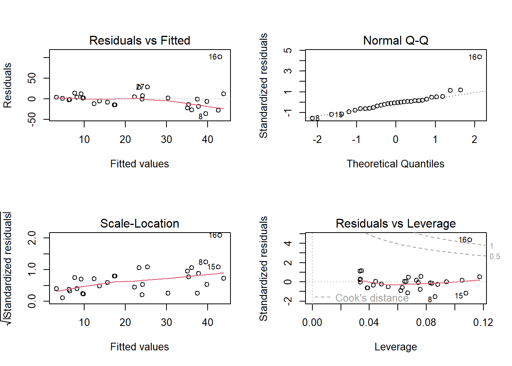
Here we see some potential issues with ordinary linear regression and we might consider Poisson count regression instead!
## try Poisson count regression model!
mydat <- mydat <- data.frame(response=response,predictor=predictor)
model <- glm(response~predictor,family=poisson(link="log"),data=mydat)
summary(model)##
## Call:
## glm(formula = response ~ predictor, family = poisson(link = "log"),
## data = mydat)
##
## Deviance Residuals:
## Min 1Q Median 3Q Max
## -7.7527 -3.1160 -0.7389 0.9276 11.2604
##
## Coefficients:
## Estimate Std. Error z value Pr(>|z|)
## (Intercept) 2.96492 0.04455 66.56 <2e-16 ***
## predictor -0.47449 0.03238 -14.65 <2e-16 ***
## ---
## Signif. codes: 0 '***' 0.001 '**' 0.01 '*' 0.05 '.' 0.1 ' ' 1
##
## (Dispersion parameter for poisson family taken to be 1)
##
## Null deviance: 692.54 on 29 degrees of freedom
## Residual deviance: 454.35 on 28 degrees of freedom
## AIC: 588.94
##
## Number of Fisher Scoring iterations: 5plot(response~predictor,data=mydat)
newdat <- data.frame(
predictor = seq(-3,3,0.1)
)
mypred <- predict(model,type="response",se.fit = T,newdata=newdat)
lines(newdat$predictor,mypred$fit,col="blue")
lines(newdat$predictor,mypred$fit+2*mypred$se.fit,col="blue",lty=2)
lines(newdat$predictor,mypred$fit-2*mypred$se.fit,col="blue",lty=2)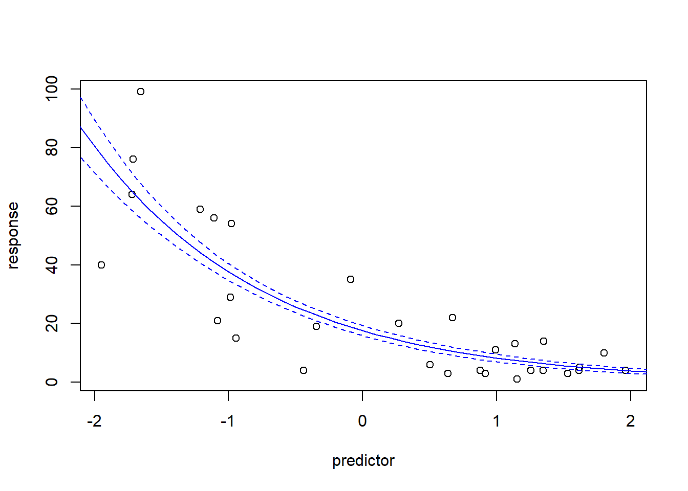
And here is the equation!
## display formula!
library(equatiomatic)
equatiomatic::extract_eq(model,wrap=T,intercept = "beta")\[ \begin{aligned} \log ({ E( \operatorname{response} ) }) &= \beta_{0} + \beta_{1}(\operatorname{predictor}) \end{aligned} \]
Diagnostic testing with GLM
Obviously, the standard diagnostic plots don’t make much sense for GLM– after all, they are testing assumptions that we are no longer making! We don’t need to test for normality of residuals if we are assuming our response variable is binomially distributed, or Poisson distributed! We don’t need to test for homogeneity of variance if our assumed probability distribution is heteroskedastic (like the Poisson distribution)!
The Poisson distribution, for example, does not have homogeneous variance- in fact, the variance of the Poisson distribution is equal to the mean. So the larger the expected value, the larger the variance!
# Demo: heteroskedasticity in Poisson distrubution
library(tidyverse)
library(ggplot2)
thisdat <- sapply(1:15,function(t) rpois(1000,lambda=t) )
thisdat <- thisdat %>%
as_tibble(.name_repair = "unique") %>%
rename_with( ~str_extract(.x,pat="(\\d)+")) %>%
pivot_longer(cols=everything(),names_to = "mean", values_to = "value",names_transform = as.numeric)
ggplot(thisdat,aes(x=mean,y=value)) +
geom_boxplot(aes(group=mean))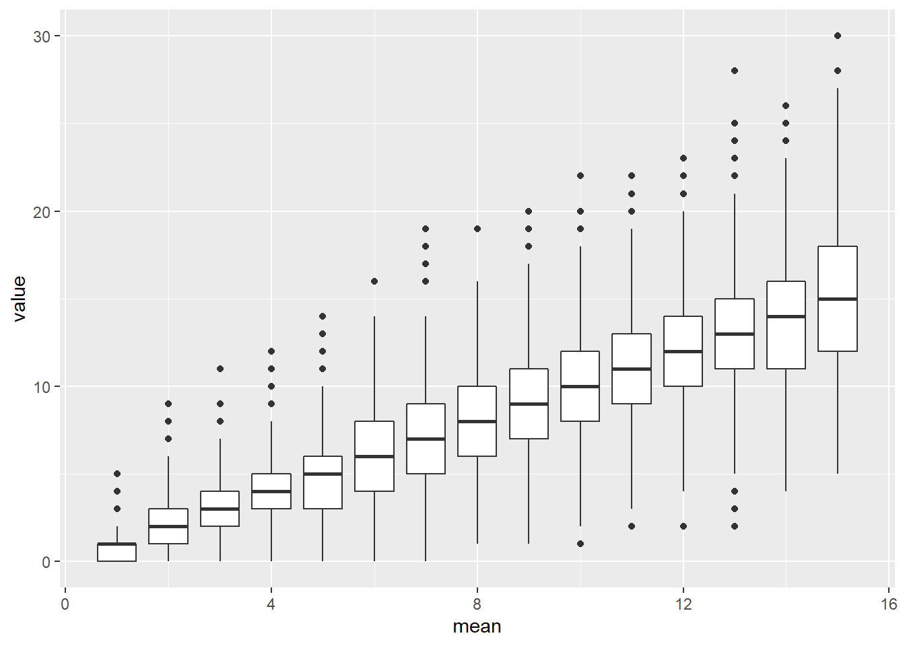
However, we need some way of testing whether the distribution we selected is a reasonable fit to our data. We could use so-called deviance or pearson residuals to estimate overdispersion and run other diagnostic tests:
# test for overdispersion:
overdisp_fun <- function(model) { # function from Ben Bolker...
rdf <- df.residual(model)
rp <- residuals(model,type="pearson")
Pearson.chisq <- sum(rp^2)
prat <- Pearson.chisq/rdf
pval <- pchisq(Pearson.chisq, df=rdf, lower.tail=FALSE)
list(chisq=Pearson.chisq,ratio=prat,rdf=round(rdf),p=pval)
}
options(scipen=15)
overdisp_fun(model)## $chisq
## [1] 486.9276
##
## $ratio
## [1] 17.39027
##
## $rdf
## [1] 28
##
## $p
## [1] 3.296925e-85Here we see that the data are overdispersed with respect to the model- much higher variance in the data than allowed by the Poisson distribution!
I prefer to use the quantile residual approach, which is very informative across many different types of models, including GLM and GLMM.
The DHARMa package in R not only implements the quantile residual approach, but does so in a way that is applicable to nearly all models you can fit in R!
NOTE: the DHARMa package also works for GLMM models (generalized linear mixed-effects models- see below!)
# quantile residuals (GLM diagnostics)
qr <- statmod::qresiduals(model)
qqnorm(qr)
abline(0,1)
plot(qr~predict(model))So using the quantile residuals we’re starting to get a picture that the Poisson distribution may not be a great fit. Let’s use the DHARMa package now…
library(DHARMa)
simresids <- simulateResiduals(model,n=250,plot=T) # clearly this is a bad fit!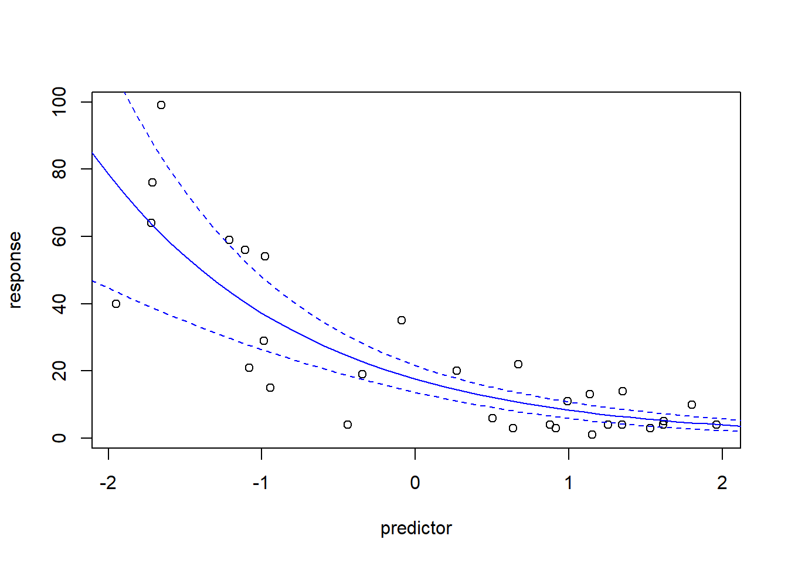
plotResiduals(simresids,predictor) # look for patterns across a predictor variable
testResiduals(simresids) # run tests on the residuals!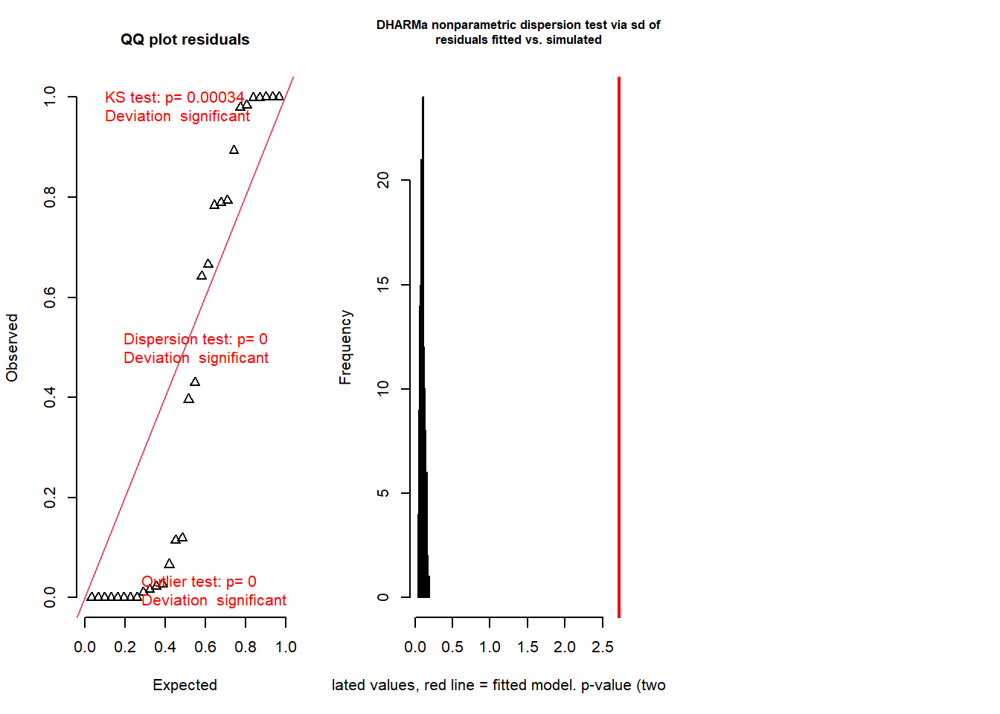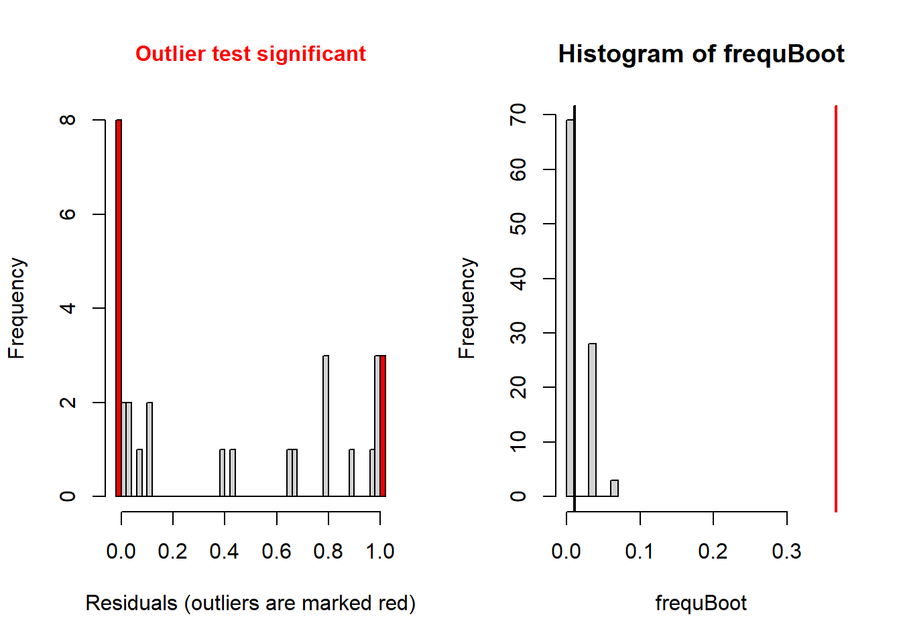
## $uniformity
##
## Asymptotic one-sample Kolmogorov-Smirnov test
##
## data: simulationOutput$scaledResiduals
## D = 0.38064, p-value = 0.0003355
## alternative hypothesis: two-sided
##
##
## $dispersion
##
## DHARMa nonparametric dispersion test via sd of residuals fitted vs.
## simulated
##
## data: simulationOutput
## dispersion = 26.057, p-value < 2.2e-16
## alternative hypothesis: two.sided
##
##
## $outliers
##
## DHARMa bootstrapped outlier test
##
## data: simulationOutput
## outliers at both margin(s) = 11, observations = 30, p-value < 2.2e-16
## alternative hypothesis: two.sided
## percent confidence interval:
## 0.00000000 0.05083333
## sample estimates:
## outlier frequency (expected: 0.0113333333333333 )
## 0.3666667## $uniformity
##
## Asymptotic one-sample Kolmogorov-Smirnov test
##
## data: simulationOutput$scaledResiduals
## D = 0.38064, p-value = 0.0003355
## alternative hypothesis: two-sided
##
##
## $dispersion
##
## DHARMa nonparametric dispersion test via sd of residuals fitted vs.
## simulated
##
## data: simulationOutput
## dispersion = 26.057, p-value < 2.2e-16
## alternative hypothesis: two.sided
##
##
## $outliers
##
## DHARMa bootstrapped outlier test
##
## data: simulationOutput
## outliers at both margin(s) = 11, observations = 30, p-value < 2.2e-16
## alternative hypothesis: two.sided
## percent confidence interval:
## 0.00000000 0.05083333
## sample estimates:
## outlier frequency (expected: 0.0113333333333333 )
## 0.3666667Okay so the DHARMa package diagnostics seem to indicate that the Poisson regression was a poor fit to the data (you will find this is usually true with Poisson regression). Let’s try running a negative binomial regression instead!
## try NegBinom count regression model!
library(MASS)
## NOTE: in reality you should use glm.nb because you don't know the additional parameter theta!
model <- glm(response~predictor,family=negative.binomial(link="log",theta = 2))
summary(model)##
## Call:
## glm(formula = response ~ predictor, family = negative.binomial(link = "log",
## theta = 2))
##
## Deviance Residuals:
## Min 1Q Median 3Q Max
## -2.7718 -1.0497 -0.2072 0.2882 1.8582
##
## Coefficients:
## Estimate Std. Error t value Pr(>|t|)
## (Intercept) 2.9641 0.1505 19.698 < 2e-16 ***
## predictor -0.4822 0.1166 -4.135 0.000292 ***
## ---
## Signif. codes: 0 '***' 0.001 '**' 0.01 '*' 0.05 '.' 0.1 ' ' 1
##
## (Dispersion parameter for Negative Binomial(2) family taken to be 1.209932)
##
## Null deviance: 62.208 on 29 degrees of freedom
## Residual deviance: 41.886 on 28 degrees of freedom
## AIC: 240.81
##
## Number of Fisher Scoring iterations: 5model <- glm.nb(response~predictor)
plot(response~predictor)
newdat <- data.frame(
predictor = seq(-3,3,0.1)
)
mypred <- predict(model,type="response",se.fit = T,newdata=newdat)
lines(newdat$predictor,mypred$fit,col="blue")
lines(newdat$predictor,mypred$fit+2*mypred$se.fit,col="blue",lty=2)
lines(newdat$predictor,mypred$fit-2*mypred$se.fit,col="blue",lty=2)
Now let’s check the model fit!
# test goodness of fit using DHARMa!
simresids <- simulateResiduals(model,n=250,plot=T) # looks a lot better!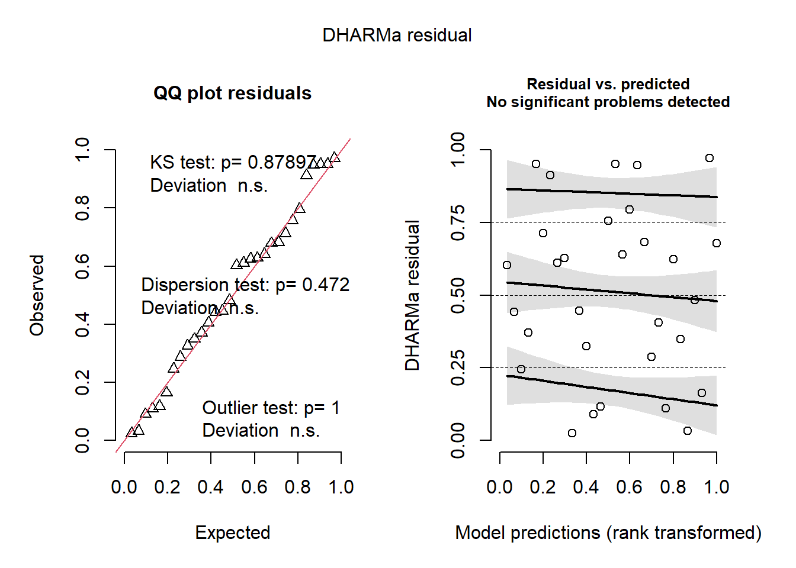
testResiduals(simresids) # run tests on the residuals!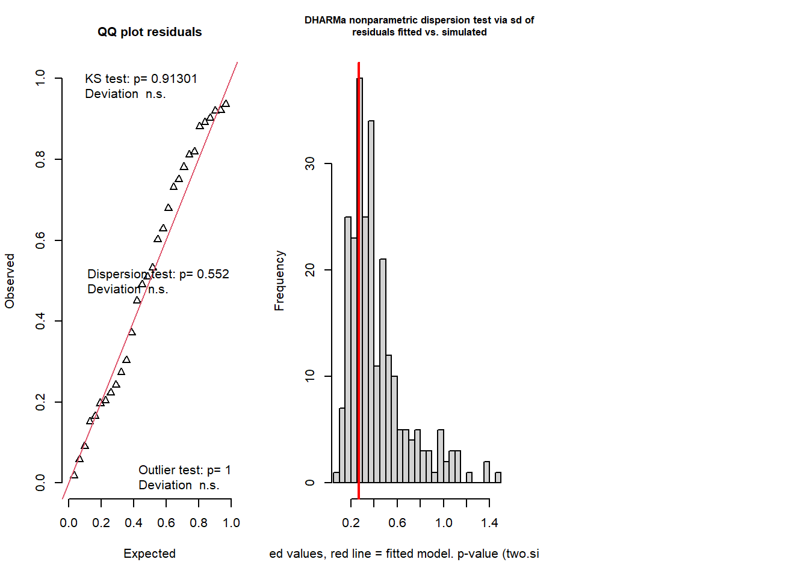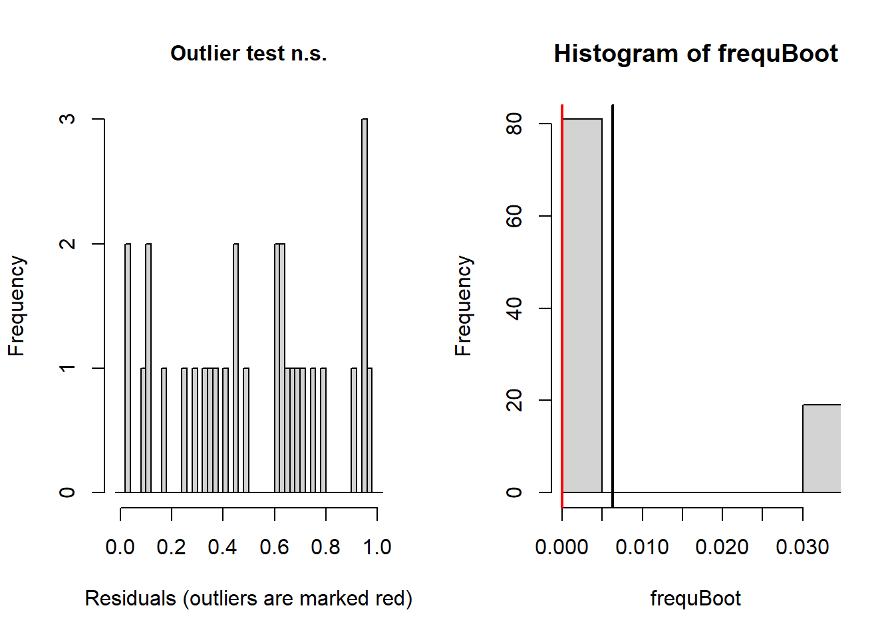
## $uniformity
##
## Exact one-sample Kolmogorov-Smirnov test
##
## data: simulationOutput$scaledResiduals
## D = 0.10255, p-value = 0.879
## alternative hypothesis: two-sided
##
##
## $dispersion
##
## DHARMa nonparametric dispersion test via sd of residuals fitted vs.
## simulated
##
## data: simulationOutput
## dispersion = 1.2582, p-value = 0.472
## alternative hypothesis: two.sided
##
##
## $outliers
##
## DHARMa bootstrapped outlier test
##
## data: simulationOutput
## outliers at both margin(s) = 0, observations = 30, p-value = 1
## alternative hypothesis: two.sided
## percent confidence interval:
## 0.00000000 0.03333333
## sample estimates:
## outlier frequency (expected: 0.00633333333333333 )
## 0## $uniformity
##
## Exact one-sample Kolmogorov-Smirnov test
##
## data: simulationOutput$scaledResiduals
## D = 0.10255, p-value = 0.879
## alternative hypothesis: two-sided
##
##
## $dispersion
##
## DHARMa nonparametric dispersion test via sd of residuals fitted vs.
## simulated
##
## data: simulationOutput
## dispersion = 1.2582, p-value = 0.472
## alternative hypothesis: two.sided
##
##
## $outliers
##
## DHARMa bootstrapped outlier test
##
## data: simulationOutput
## outliers at both margin(s) = 0, observations = 30, p-value = 1
## alternative hypothesis: two.sided
## percent confidence interval:
## 0.00000000 0.03333333
## sample estimates:
## outlier frequency (expected: 0.00633333333333333 )
## 0And this time our count regression model fits the data well, and we can report the results of this model with confidence!
NOTE: you should always run goodness-of-fit tests for any model you fit to data. But it is especially important in the case of Poisson regression, because in general most count data has much more variance that a Poisson distribution allows for (and sometimes it has less..). This can lead to a host of problems- included inflated “significance” of your effects). You should always be wary of reported Poisson regression results with no goodness of fit checks!
Model selection with AIC
Often we have multiple candidate models for describing how our response variable relates to one or more of our predictor variables. This is true for multiple linear regression and GLM models, and mixed-effects models (see below) and non-linear regression models.
Information-theoretic criteria like Akaike’s Information Criterion provide a common currency that allows us to compare and rank multiple models.
In general, the models with the lowest AIC are better than models with higher AIC.
AIC is defined as:
\(AIC = -2\cdot ln(Likelihood) + 2\cdot k\)
Where k is the number of fitted parameters in the model and Likelihood is the maximum likelihood of the data (probability of the observed data set under the fitted model).
There is a commonly used correction for small sample size called AICc:
\(AICc = AIC + \frac{2k^2+2k}{n-k-1}\)
Comparing multiple GLM models using AIC is relatively simple!
# AIC model selection ----------------------
# Make up data!
predictor1 = runif(30,-2,2)
predictor2 <- runif(30,-100,100)
predictor3 <- rnorm(30) # useless predictor
response = rnbinom(30,mu=exp(3-0.5*predictor1+0.01*predictor2),size=2)
# fit a bunch of candidate models
model.pois.all <- glm(response~predictor1+predictor2+predictor3,family="poisson")
model.nb.all <- glm.nb(response~predictor1+predictor2+predictor3)
model.nb.1 <- glm.nb(response~predictor1)
model.nb.12 <- glm.nb(response~predictor1+predictor2)
model.nb.2 <- glm.nb(response~predictor2)
cand.set <- list(
Poisson=model.pois.all,
NegBin_allvars = model.nb.all,
NegBin_pred1 = model.nb.2,
NegBin_preds1and2 = model.nb.12,
NegBin_pred2 = model.nb.2
)
### Make AIC table
AICtab <- data.frame(
ModelName = names(cand.set),
LogLikelihood = sapply(cand.set,logLik),
AIC = sapply(cand.set,AIC)
)
k <- c(3,3,1,2,1)
AICtab$AICc <- AICtab$AIC + (2*k^2+2*k)/(30-k-1)
AICtab$DeltaAICc <- abs(AICtab$AICc-min(AICtab$AICc))
AICtab[order(AICtab$DeltaAICc,decreasing = F),]## ModelName LogLikelihood AIC AICc DeltaAICc
## NegBin_allvars NegBin_allvars -121.8939 253.7877 254.7108 0.000000
## NegBin_preds1and2 NegBin_preds1and2 -124.1918 256.3836 256.8280 2.117221
## NegBin_pred1 NegBin_pred1 -130.4119 266.8238 266.9667 12.255908
## NegBin_pred2 NegBin_pred2 -130.4119 266.8238 266.9667 12.255908
## Poisson Poisson -322.9859 653.9718 654.8949 400.184078NOTE: for AIC model comparison to make sense, the response variable must be exactly the same (note: you can’t compare different transformations of the response variable) and the number of observations must be exactly the same. Careful with missing data here!